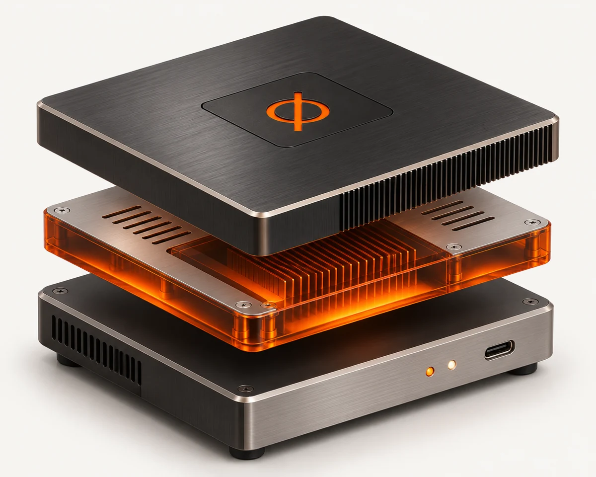
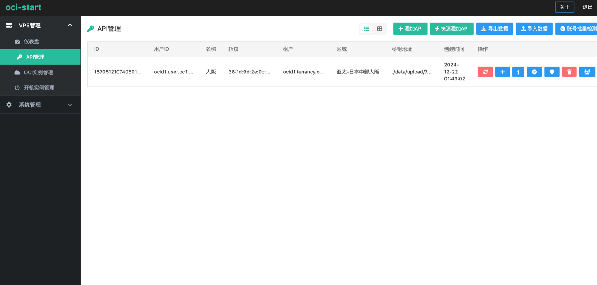
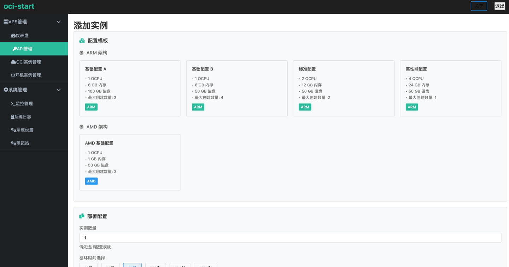
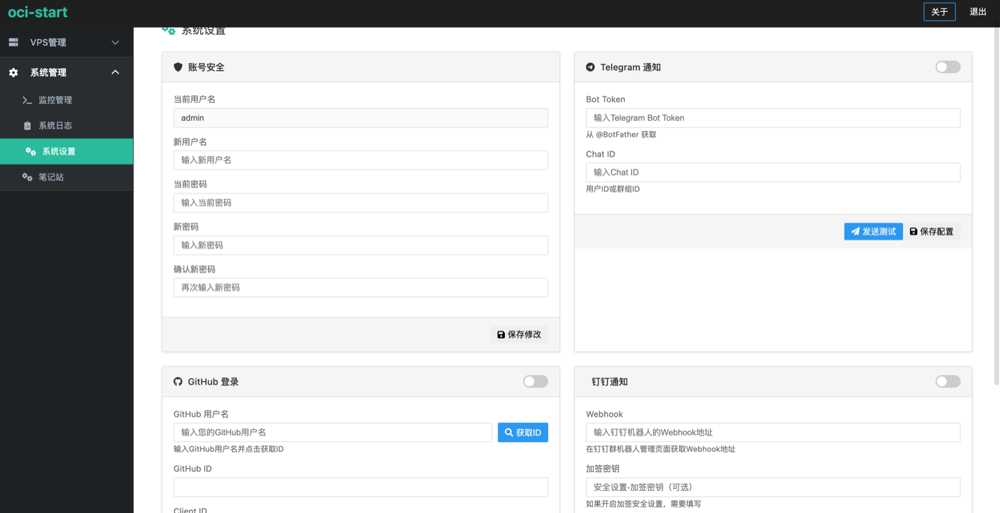

掌控你的Oracle Cloud.
在自己的服务器上运行 OCI-Start，集中管理多租户、云实例与网络资源。从并发开机到日常监控，私钥始终保存在本机。
查看最新版本
- 开源协议
- Apache 2.0
- 计算架构
- ARM / AMD
- 部署方式
- Script / Docker
- 私钥存储
- 本地 H2
一个面板，管理云上日常
完整功能清单界面预览
以下截图来自项目 README，界面会随版本持续更新。






系统监控页：API 数、开机实例数、抢机次数，以及 CPU、内存和系统信息仪表盘
三步完成部署
支持脚本和 Docker 两种方式，任选其一。
-
准备环境
一台 Linux 服务器，推荐 Debian 或 Ubuntu。脚本方式需要 Java 8 及以上版本。
sudo apt update && sudo apt install default-jdk -
运行安装命令
复制所选部署方式的命令，在服务器上执行。新版本会自动检测并安装 Redis，如本机已有 Redis 请先评估端口冲突。
-
打开面板
浏览器访问下面的地址，使用配置的用户名和密码登录。
http://your-ip:9856
mkdir -p oci-start && cd oci-start
wget -O oci-start.sh https://raw.githubusercontent.com/doubleDimple/shell-tools/master/oci-start.sh
chmod +x oci-start.sh
./oci-start.sh start./oci-start.sh stop # 停止
./oci-start.sh restart # 重启
./oci-start.sh status # 查看状态
./oci-start.sh update # 升级
./oci-start.sh uninstall # 卸载mkdir -p oci-start-docker && cd oci-start-docker
wget -O docker.sh https://raw.githubusercontent.com/doubleDimple/shell-tools/master/docker.sh
chmod +x docker.sh
./docker.sh install./docker.sh uninstall # 卸载
docker ps -a # 查看容器状态
docker logs -f oci-start # 实时查看日志使用 Nginx 或宝塔反向代理、需要 VNC 控制台转发时，请参考 README 中的配置说明
完整功能清单
按面板菜单分组，列出已经实现的功能。
租户与账号
- 粘贴配置快速导入，支持创建最小权限专用 API 用户
- 账号批量测活，识别免费号、试用号与 PAYG 升级号
- IAM 用户管理、密码策略、邮箱 MFA
- 区域订阅、配额查询、账单费用与审计日志
- 月度流量预警，超过阈值自动关机
- 租户备份导出需验证码确认
开机任务
- 快速开机与自定义配置两种模式
- ARM 与 AMD 多档规格模板，含付费规格
- 按区域和架构拉取可用系统镜像
- 自定义实例数量、重试间隔与每日时段
- 按区域单价估算每小时与每月费用
- 实时任务日志与历史记录
实例运维
- 启动、停止、终止（可保留启动盘）、改名
- 在线调整 CPU 与内存，一键 DD 重装
- 引导卷扩容，VPU 在 0–120 之间调整
- 换公网 IPv4，可按指定网段筛选
- 批量添加 IPv6，管理附属 VNIC
- Web SSH、SFTP 与 VNC 控制台
云服务与工具
- 45+ 商业区域地图与历史开机记录
- 浏览器直连各区域延迟测试
- 对象存储桶浏览、上传与下载
- OCI 邮件服务配置与发信
- VCN 安全列表规则管理
- GCP 实例查看与管理
DNS 与监控
- Cloudflare 解析记录同步与编辑
- 腾讯云 EdgeOne 解析与加速域名
- 任意厂商 VPS 统一纳管
- 一键安装探针，上报 CPU、内存、磁盘与流量
- 电信、联通、移动三网延迟与丢包
系统与安全
- HTTP 代理池，可为单个租户绑定代理
- Telegram、Bark、钉钉、飞书通知与每日巡检
- GitHub / Google 登录、Turnstile、TOTP 二次验证
- MFA 验证码备份、笔记、加密数据迁移
- 系统日志、宿主机监控、开发者 API Token
- 深浅色主题、中英文界面、手机端适配
社区与贡献者
OCI-Start 由社区共同维护。欢迎提交 Issue、Pull Request，或者点一个 Star。
Star 趋势
赞助商
常见问题
OCI-Start 收费吗？
不收费。项目基于 Apache-2.0 协议开源，可以自由部署和修改。
我的 API 私钥安全吗？
面板部署在你自己的服务器上，私钥保存在本机 H2 数据库，不会上传到任何远端。Telegram 机器人只用来推送通知，不接触账号数据。
需要什么样的服务器？
推荐 Debian 或 Ubuntu。脚本部署需要 Java 8 及以上版本，也可以选择 Docker 部署。
如何升级到新版本？
脚本部署执行 ./oci-start.sh update 即可。面板的“关于”页面也会提示新版本。
怎么修改默认端口或配置反向代理？
默认端口为 9856，可在配置文件的 server.port 中修改。使用 Nginx 或宝塔反代时需要设置可信代理，具体请看 README 的配置章节。
除了甲骨文云还支持其他云吗？
核心功能围绕 Oracle Cloud。此外支持导入 GCP 服务账号查看和管理实例，以及纳管任意厂商的 VPS 进行监控。